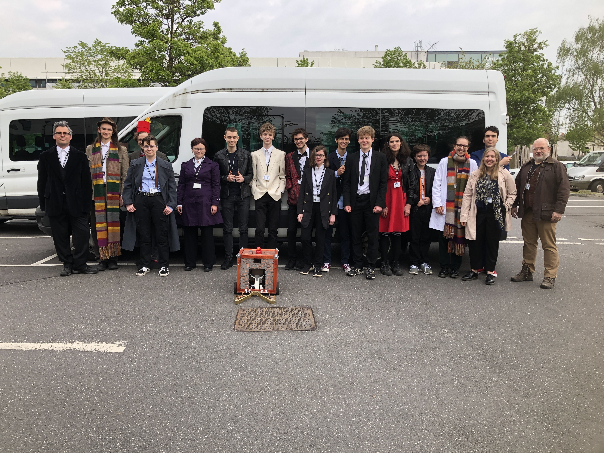

The aim of this year's game was to pick up cans and take them back to your starting zone to score points. Most of the cans in the arena were the 'wrong' way up, with some cans in the centre on a plinth that were the right way up. # points were scored for a can the wrong way up and # for a can the right way up.
The robot was designed to funnel cans into the centre front of the robot, which would trigger a switch when a can was in position, causing the robot to pick up cans with a grabber mechanism, turn them the right way up inside the robot and then store them on a ramp at the back. The robot would then return to the scoring zone, lift up the barrier holding the cans inside the robot and drive forwards, leaving the cans in the zone. The side panels of the robot were laser-cut wood, one side etched with the names of the team members, another with the team's sponsors, and another with various phrases such as "wibbly wobbly timey wimey", all in Circular Gallifreyan.
Hills Road won the competition by collecting and depositing 5 cans the right way up in their scoring zone (something that no other robot could do). The team also won the team image prize for the robot (which was designed after the Moment from Doctor Who) and the team, who all came to the competition dressed as Doctor Who characters.
The talking milk??? Having to do last minute modifications in the bathroom of the hotel, this probably being the reason why SR introduced a weight limit...
The team was comprised mostly of upper sixth who didn't get to do SR properly the year before because Covid and were champing at the bit to build a robot and hence went kind of nuts with it.